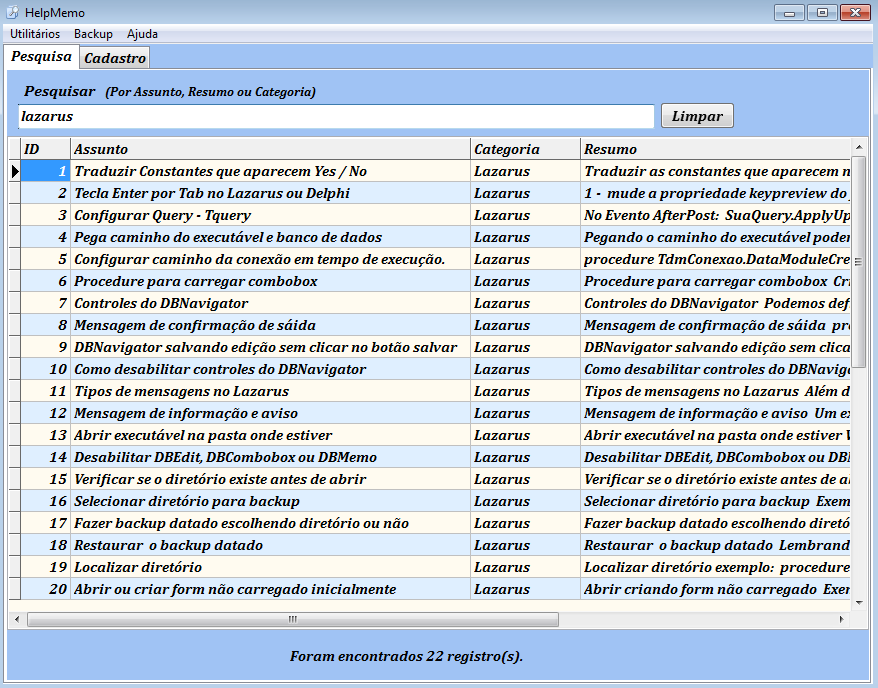
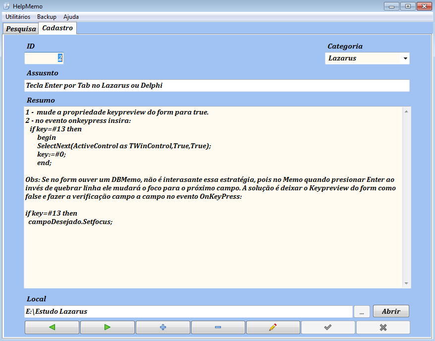
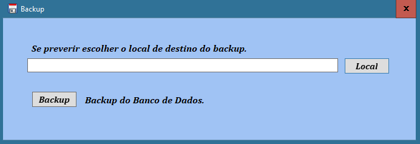
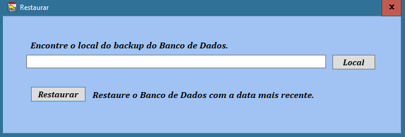
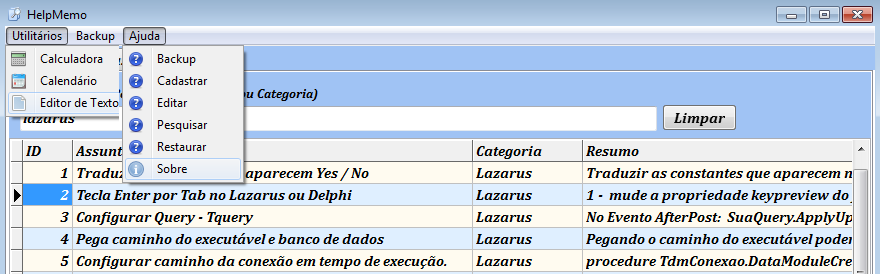

HelpMemo
Ajuda para estudos diversos - Lazarus 2.0.6 Free Pascal
HelpMemo 1.5 32 bits
O HelpMemo é um sitema de cadastro de estudos ou qualquer tipo de informação. Se você estuda assuntos diversos, de Física Quântica a Estudos Bíblicos, de Receitas culinárias a Javascript, o HelpMemo pode auxiliá-lo a encontrar com muita facilidade suas anotações.
Download para Windows
O aplicativo já compilado (pronto para uso), incluindo o Banco de Dados e utilitários podem ser baixados no link abaixo. Não é preciso instalar nada, é só copiar a pasta no Pen Drive e usar onde quiser.
Download no Google DrivePesquisar
Pesquisar no HelpMemo é muito simples, é só digitar no campo pesquisar. A busca será feita nas colunas Assunto, Resumo e Categoria. Digitando o texto como está na categoria, será selecionado todos os registros daquela categoria.
Cadastro
O sistema de cadastro do HelpMemo é muito simples e intuitivo. No entanto ressalto que os assuntos são organizados por categoria e recomendo fortemente que se aplique em dedicar alguns segundos para cadastrar os detalhes importantes de tudo que estiver estudando. Em pouco tempo estará colhendo os resultados dessa prática.
Backup
O sistema de backup do HelpMemo acrescentará a data atual ao Banco de Dados. Ficando assim muito fácil gerenciar seus backups. Se não escolher um local o backup será feito no mesmo diretório do aplicativo.
Para restaurar o Banco de Dados, encontre o último backup feito pela data e clique em restaurar.
Utilitários e Ajuda
O HelpMemo traz os utilitários Calculadora, Calendário e um Editor de Texto que pode ser usado como um bloco de notas. Ajuda traz uma breve explicação das principais funções.
